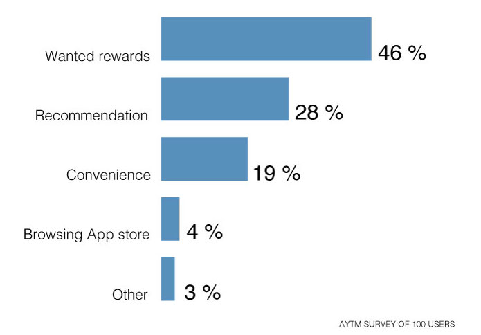

When Matthew Weber and I began researching mobile payments, we wanted to better understand the space and uncover people’s motivations for using their phones to pay for things in stores. What we found was more tangential to financial transactions than we’d expected.
Our first survey showed that coffee was the most common purchase, and we were surprised to discover that Starbucks accounted for most of those purchases. That struck us as an interesting finding. What could we find out if we dug a little deeper? Could we not only answer Ion’s question of why people use mobile payments, but also, why Starbucks? If we could understand that, then we could offer lessons that would help others mimic the popularity of the Starbucks app.
A follow-up survey of 100 people helped us to explore what specifically motivates Starbucks app users. Starbucks has found the key to brand devotion among its customers, and it’s not just the caffeine. The app has a winning combination of rewards and convenience.
Survey Findings
It's All About Rewards and Convenience
The reasons users gave most for using the Starbucks app were its ease of use and convenience, with 67% of users saying they liked the app because of those things. But there’s more to it than ease and convenience.
- Rewards, such as earning free drinks or song downloads, are a huge incentive. Eighty-four percent of respondents use the rewards feature and almost half downloaded the app simply because of the rewards. Twenty-seven percent also used the app to get free songs.
Reasons for Downloading the App

That alone doesn’t bring and keep these users. After all, users could still earn rewards by using a Starbucks card in stores. Forty-six percent of Starbucks app users had had a loyalty card for less than a year and 21% had no loyalty card at all before downloading the app. So, these users were more enticed by rewards after using the app. This brings us back to our original conclusion.
- Mobile payments help people to carry less — and that ability combined with the rewards — drives users back to the app time and time again. Starbucks cards are a popular gift, but it’s a burden to carry around multiple cards; the app means easily having access to them at all times. Nearly all, 91%, of the people who responded to our survey said they would stick with Starbucks even if they could pay with another app. Those rewards are truly sustaining that customer loyalty.
Starbucks App Users Are Fans
The level of loyalty we found among Starbucks’ customers was impressive. Not only do people use the Starbucks app, they actually enjoy it. When asked to review the app, 43% of users gave it five stars and 48% gave it four stars. The users surveyed were frequent patrons of the coffee shop as well as users of the app, with 61% having visited Starbucks in the last week and 84% of users having used the app for their most recent purchase.